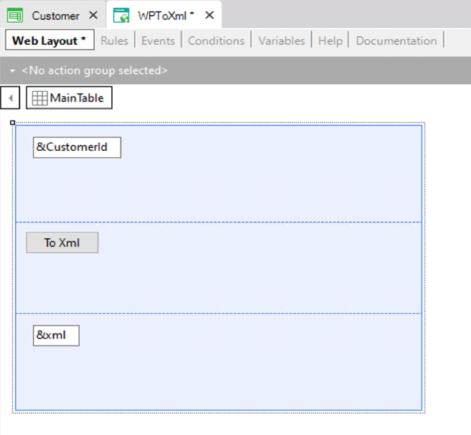
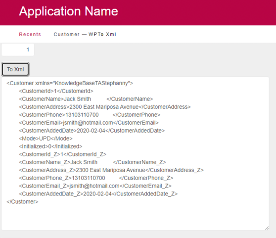

Converts the data stored in a variable into an XML structure with a Tag for each Transaction attribute. For each Transaction attribute, a Tag_Z will be created with its old value.
&StringVble = &VbleBasedOnBC.ToXml()
Where:
&StringVble
Is a variable defined in a GeneXus object, based on the character type.
&VbleBasedOnBC
Is a variable defined in a GeneXus object, based on a Business Component.
Suppose you define the following Transaction as Business Component (by setting its Business Component property = True):
Customer
{
CustomerId* (Autonumber property = True)
CustomerName
CustomerAddress
CustomerPhone
CustomerEmail
CustomerAddedDate
}
Customer rule:
Default(CustomerAddedDate,&today);
Accordingly, a Business Component data type of the Customer Transaction is automatically created in the Knowledge Base and you can define a variable of the new type created in any object.
Thus, in any Web Panel object you can define a variable named &Customer based on the Customer type.
The objective of the Web Panel is to allow the user to enter a customer Id value. Then, by pressing a button, the Event associated with the button will load in memory (in the &Customer Business Component variable) the customer data stored in the database associated with the customer id entered by the user. Next, the ToXml method will be applied to the &Customer variable, to convert the customer data to an XML format and it will be shown in the Web Panel form.
To achieve this, you will also have to define these variables in the Web Panel :
&CustomerId: Based on the CustomerId attribute &xml: Character(200)
and design the Web Panel form like this:

The following code is associated with the Web Panel button:
Event 'ToXml' &Customer.Load(&CustomerId) &xml=&Customer.ToXml() Endevent
In run-time, suppose you enter the value: 1 in the &CustomerId variable and then press the button. The customer data is loaded in the &Customer variable and converted to XML format, as the following image shows:

| Backlinks | |
| Toc:Business Component | Business Component FromXml method |